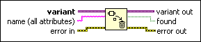
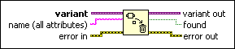

Delete Variant Attribute Function
Owning Palette: Variant VIs and Functions
Requires: Base Development System
Deletes an attribute(s) and value(s) in variant data.

 Add to the block diagram Add to the block diagram |
 Find on the palette Find on the palette |
Owning Palette: Variant VIs and Functions
Requires: Base Development System
Deletes an attribute(s) and value(s) in variant data.

| Add to the block diagram |
Find on the palette |
 |
variant is the variant data you want to delete an attribute(s) and value(s) in. |
 |
name is the name of the attribute you want to delete. If name matches an attribute, this function deletes the attribute and its value. If name is an empty string, this function deletes all the attributes and associated values in the variant data. The default is an empty string. |
 |
error in describes error conditions that occur before this node runs. This input provides standard error in functionality. |
 |
variant out is the variant data with the deleted attribute(s). |
 |
found is TRUE if the function found the attribute specified in name. If name is unwired, found is TRUE if the function located and deleted attributes and FALSE otherwise. |
 |
error out contains error information. This output provides standard error out functionality. |